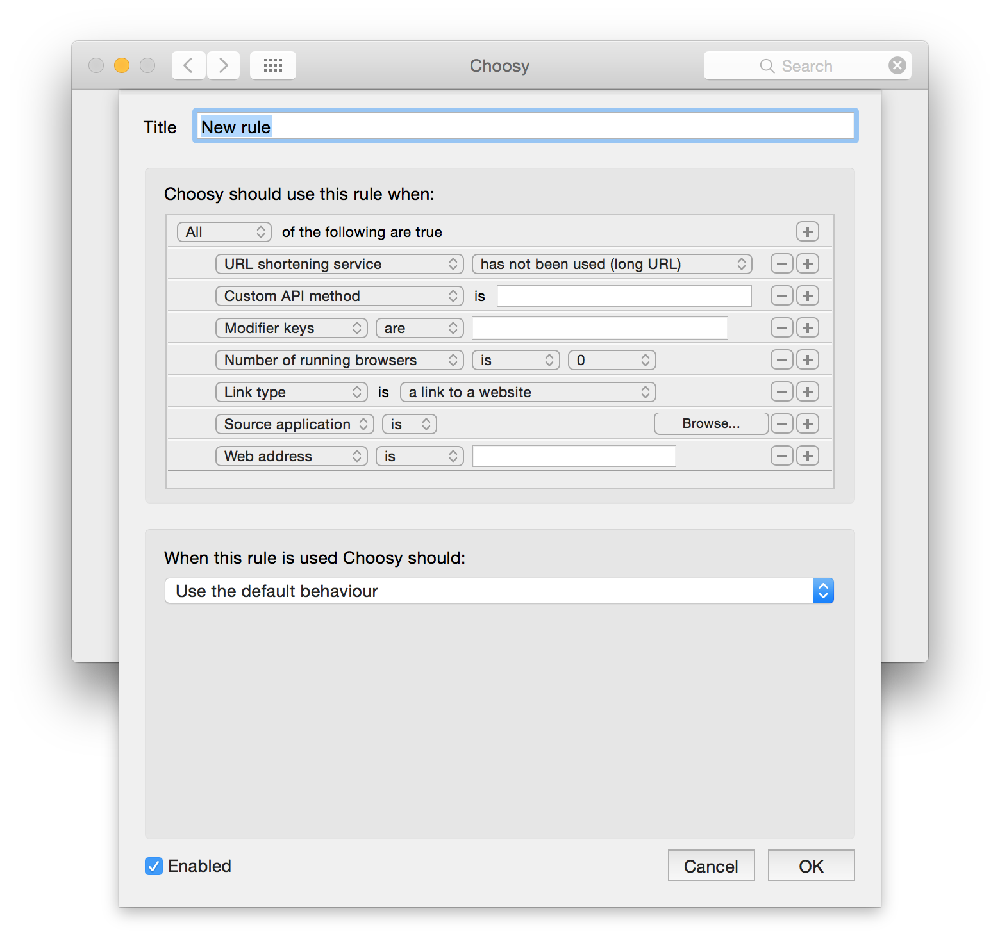
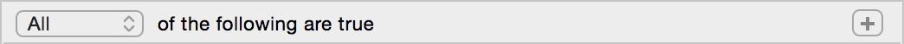
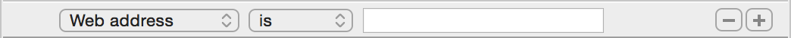
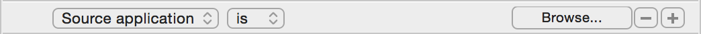
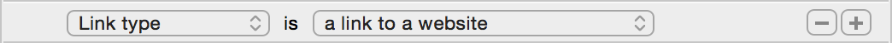
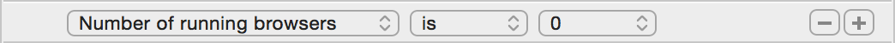
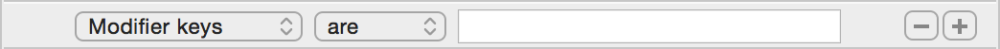
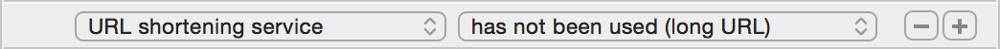
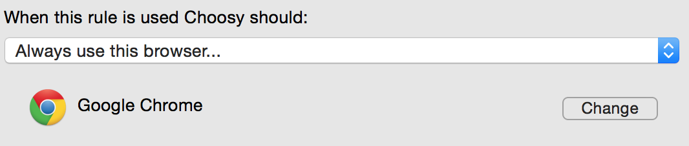
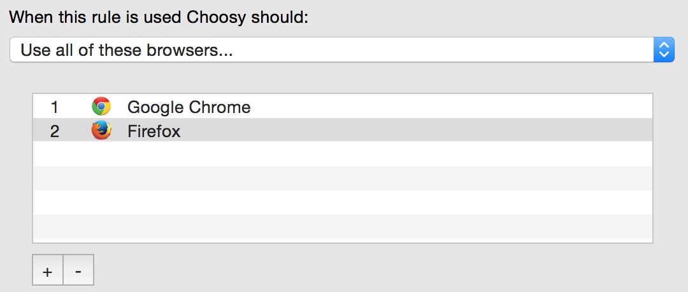

Adding and editing rules
To add a rule, click on the plus button below the list of rules.
To edit a rule, select the rule in the list and then click the “Edit selected rule” button on the right hand side below the list.
When adding or editing rules this window will be displayed:
This window contains three groups of options:
General rule settings
- Title
-
The title setting is located at the top of the rule editing window. It allows you to give the rule a name that will be displayed in the rules list. Choose something specific enough to distinguish this from other rules.
- Enabled
-
The enabled checkbox is located at the bottom of the rule editting window. This allows you to disable rules without deleting them. If a rule is not enabled (i.e. if this box is not checked) then Choosy will ignore the rule.
When Choosy should use this rule
This section allows you to define the conditions that must be met in order for Choosy to use this rule.
The first row of the rule editor lets you select what type of rule it is, and which of the
rules criteria (any, all or none) must be met for the rule to be
triggered:

The subsequent rows of the rule editor show the different criteria that make up the rule.
You can add new criteria by clicking on the plus button at the end of any row, and you can
remove a criteron by clicking on the minus button at the end of its row:

The dropdown list at the beginning of the row lets you select what this criterion will match. The rest of the options in the row will depend on what type of criterion it is. Some types will have several options, others will have a text box where you can type in a value.
The following types of criteria are available:
- Web address
-
This allows rules to be set up for certain web sites, or groups of web sites. For example you could use this type of criterion to set up a rule that sends all links to
google.comto Firefox.Web address criteria are very flexible: You can match exact addresses, addresses that start with, end with or contain certain words or even addresses that match patterns and regular expressions. The web address rules section describes these options in more detail.
- Source application
-

This allows rules to be created that will be triggered when you click on a link in a specific application. The browse button lets you pick an application from your Applications folder (or elsewhere on your Mac).
By selecting “is not” in the second dropdown list, you can also create rules that target links from all source applications except for the application selected in this row.
- Link type
-

Link type lets you select from the following options:
- a link to a web site
- an HTML file on your computer
This lets you set up rules that only apply either to HTML files on your computer, or to links to web sites. For example you might want to set up a custom prompt for HTML files on your computer that includes editing tools that wouldn't be able to open normal web links.
- Number of running browsers
-

This lets you set up rules that only trigger when a certain number of browsers are running, or when more than or less than a certain number of browsers are running. The second dropdown list lets you select from the following options:
- is
- is not
- is less than
- is greater than
The third dropdown list lets you select a number from 0 to 10.
When you click on a link the number of running browsers is calculated as the number of applications from your browsers list that are currently running.
- Modifier keys
-

This type of criterion lets you set up rules that are only triggered when you are holding down a modifier key or a combination of modifier keys when you click on the link.
This is useful for behaviours that you only want to occur sometimes. For example you could set up your behaviour settings to never prompt you to select a browser, and then set up an advanced behaviour rule to prompt you to select from all browsers when you hold shift while clicking on a link.
Modifier keys criteria can use combinations of the following keys:
- ⇧ Shift
- ⌃ Control
- ⌘ Command (sometimes called “Apple”)
- ⌥ Option (sometimes called “alt”)
- ⇥ Tab
- ⎋ Escape
- Custom API method
-

Custom API methods let you extend Choosy's API and add your own behaviours to it.
If you were to create a rule that responded to a custom API method called “my.rule” you would trigger it in the same way as any other API method, e.g. by loading the URL
x-choosy://my.rule/http://www.google.comThe custom API methods page contains more information about creating and using your own custom API methods.
- URL shortening service
-

This type of criteria allow you to define rules that are only triggered when Choosy opens a link to a URL shortening service, like bit.ly or tinyurl.
This is useful when combined with the short URL expansion settings. You can tell Choosy to always prompt when opening short URLs so that you will be able to check the expanded URL in the prompt before you open the site in a browser.
A list of supported URL shortening services, and instructions for adding your own are in the short URL expansion section on the behaviour page.
What Choosy should do when it uses this rule
At the bottom of the rule editing window are the rule's behaviour settings. This is where you tell Choosy what to do when all the rule's criteria match the link that is being clicked.
The following behaviours are available:
- Use the default behaviour
- Choosy will act in accordance with your behaviour settings, just as it would have done if no advanced behaviour rules had been triggered.
- Use my favourite browser
- Choosy will use the browser at the top of your browsers list.
- Use the best running browser
- Choosy will use the running browser closest to the top of your browsers list.
- Prompt to select from all browsers
- Choosy will prompt you to select from all the browsers in your browsers list.
- Prompt to select from running browsers
- Choosy will prompt you to select from all the browsers in your browsers list that are currently running.
- Prompt to select from these browsers…
-
Choosy will prompt you to select from a custom list of browsers that you set up only for this rule. When you select this option an interface very similar to the browsers list will appear where you can set up a custom browser list.
- Always use this browser…
-
Choosy will always use the same browser. When you select this option an interface will appear that allows you to select the browser that Choosy should always use with this rule.
 - Use all of these browsers…
-
Choosy will open all of the browsers you specify. The browsers will be opened in the order that you specify. When you select this option an interface very similar to the browsers list will appear where you can set up a custom browser list.
